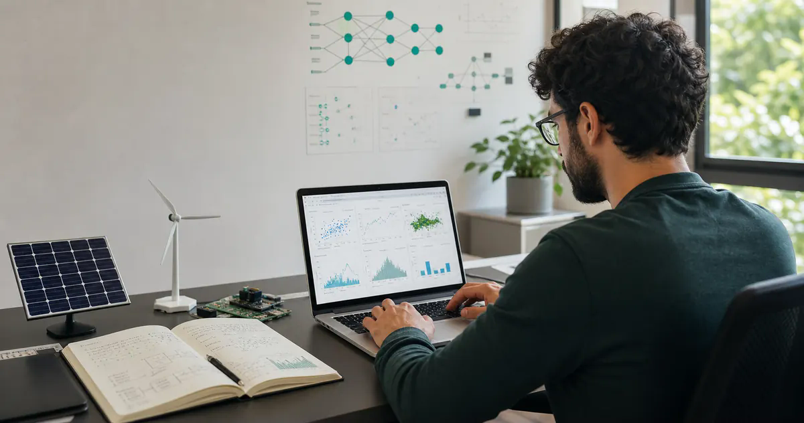

Python e análise de dados
Python, Pandas, NumPy, análise exploratória, tratamento de dados e construção de fluxos de processamento.

Cientista de Dados | Aprendizado de Máquina | Previsão e Otimização
Cientista de Dados com experiência em Aprendizado de Máquina, previsão, otimização e sistemas inteligentes para suporte à tomada de decisão. Desenvolvo soluções baseadas em dados para previsão, otimização e inteligência operacional em aplicações industriais e energéticas.
Sobre mim
Minha trajetória combina pesquisa aplicada, Aprendizado de Máquina, IA Explicável, otimização, previsão e energia inteligente. O foco do meu trabalho é transformar dados em modelos, simulações e ferramentas que apoiem decisões técnicas.
Na PS Soluções, atuo como Cientista de Dados no desenvolvimento de um Sistema de Gerenciamento de Energia (EMS) para microrredes isoladas híbridas PV/BESS/Diesel. Na formação acadêmica, conecto IA aplicada à manufatura, análise de vibração, desgaste de ferramentas e sistemas energéticos inteligentes.
Tecnologias
Python, Pandas, NumPy, análise exploratória, tratamento de dados e construção de fluxos de processamento.
Scikit-Learn, validação cruzada, métricas de regressão, seleção de modelos e experimentação.
TensorFlow, aprendizado por reforço, PPO, Stable Baselines3 e definição de funções de recompensa.
SHAP, interpretação global/local, importância de variáveis e comunicação de resultados técnicos.
EMS, previsão solar, NASA POWER, HOMER Pro, microrredes isoladas, PV, BESS e geradores diesel.
Streamlit, Git, GitHub, documentação técnica e preparação de projetos para GitHub Pages.
Experiência profissional
Atuação orientada ao desenvolvimento de modelos, simulações e estratégias de decisão para operação de microrredes isoladas.
Cientista de Dados
Desenvolvimento de EMS para microrredes isoladas com geração fotovoltaica, sistema de baterias e geradores a diesel, dentro de um contexto de Pesquisa e Desenvolvimento.
Projeto principal
Principal diferencial técnico do portfólio: um sistema inteligente para gerenciamento energético e otimização operacional de microrredes isoladas.
O projeto compara estratégias de gerenciamento energético para reduzir dependência de diesel e melhorar a tomada de decisão operacional. A solução combina previsão solar, simulação horária, otimização e aprendizado por reforço.
Projeto desenvolvido no contexto de P&D executado pela PS Soluções. O texto apresenta o desenvolvimento metodológico, simulações e avaliação computacional, sem afirmar implantação física operacional.
Pesquisa aplicada e inovação
Os dois mestrados são apresentados como evidências de capacidade técnica aplicada: modelar, prever, interpretar, otimizar e comunicar resultados.
Pesquisa de mestrado em Engenharia de Produção sobre o torneamento do aço AISI 52100 endurecido por meio de análise de vibração e aprendizado de máquina explicável.
Pesquisa em Energia Inteligente voltada a microrredes híbridas PV/BESS/Diesel, com previsão, aprendizado por reforço e otimização energética.
Formação acadêmica
Início em 2026. Situação: em andamento.
Concluído em 2026. Dissertação sobre metodologia inteligente para gerenciamento energético e otimização operacional de microrredes isoladas híbridas PV/BESS/Diesel.
Período 2023-2025, concluído em dezembro de 2025. Dissertação em previsão e interpretação do desgaste da ferramenta no torneamento do aço AISI 52100 endurecido com análise de vibração e aprendizado de máquina explicável.
Publicações e eventos científicos
Previsão de Respostas Estruturais de Modelos Fabricados via Impressão 3D por meio de Aprendizado de Máquina. Aplicação de modelos preditivos a respostas estruturais, conectando experimentação em engenharia e Aprendizado de Máquina.
Integração de Aprendizado de Máquina e NSGA-II para Otimização no Torneamento de Aço AISI 52100. Uso de modelos preditivos e otimização multiobjetivo para apoiar decisões em manufatura.
Da Análise de Dados à Performance em Pista. Estudo de estratégia para Charles Leclerc no GP da China de 2025 usando análise de dados e simulação.
Previsão da Vida Útil da Ferramenta no Torneamento por meio de Análise de Vibração e Aprendizado de Máquina. Aplicação de sinais de vibração e aprendizado de máquina ao monitoramento de processos de usinagem.
Destaques técnicos
Métricas e conquistas que conectam experiência profissional, pesquisa aplicada e desempenho competitivo em desafios de dados.
Simulação anual da operação de microrrede isolada com PV, BESS e gerador diesel.
Resultado aproximado em modelo explicável para previsão de desgaste de ferramenta.
Classificação entre mais de 10.000 participantes.
Resultado competindo individualmente.
Certificações
Certificação relacionada ao Bootcamp Santander de Ciência de Dados 2025.
Certificação complementar em aprendizado de máquina com Python.
Contato
Busco oportunidades como Cientista de Dados Júnior, Cientista de Dados Pleno Inicial ou Analista de Aprendizado de Máquina, com foco em dados, modelos preditivos, previsão, otimização e sistemas inteligentes.